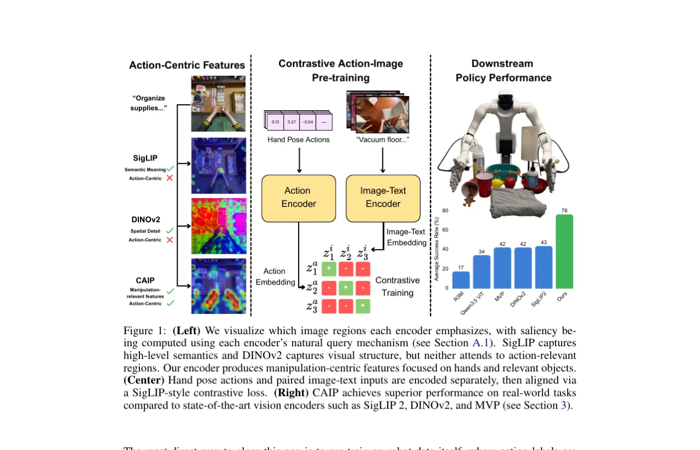
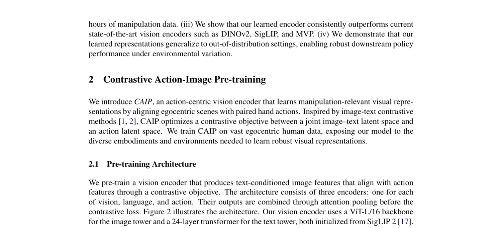
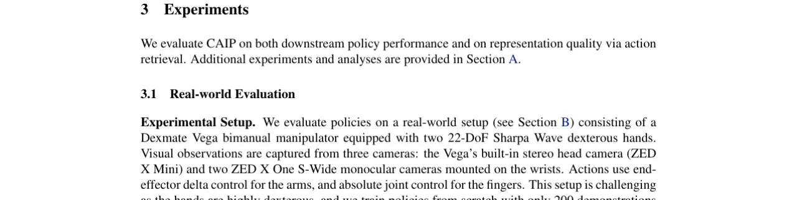
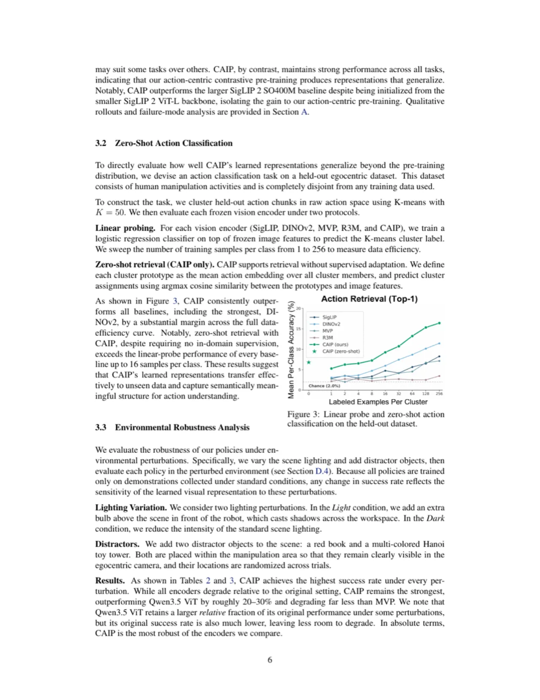

现有视觉编码器缺乏"动作感知"——它们理解语义，却不关注与物理交互相关的区域。CAIP 提出以大规模人类第一视角视频中的 3D 手部姿态为末端执行器动作的代理，通过 SigLIP 风格的对比损失将"动作嵌入"与"文本条件图像嵌入"对齐，在只用 88 小时机器人数据的前提下，于真实灵巧操纵任务上达到 76% 平均成功率，超越最强基线 SigLIP 2（43.4%）逾 30 个百分点。
现有机器人视觉编码器面临双重困境：一方面，机器人轨迹数据规模远不及互联网图文数据；另一方面，用图文对比（CLIP/SigLIP）或掩码自编码（MAE/DINOv2）预训练的编码器虽捕获语义或空间结构，却从未接触过配对的视觉-动作信号，因此在策略学习中产生根本性的表示错位。
"robot trajectories, the most direct source of this paired signal, are not available at pre-training scale, motivating us to extract action signals from abundant human video instead."
CAIP 的核心洞察：人类手部姿态（3D 关键点）在形式上类似于机器人末端执行器轨迹，可以从海量第一视角视频中廉价获取，从而弥合人类示范与稀缺机器人数据之间的鸿沟。

CAIP 包含三个编码器（视觉、语言、动作），通过两阶段注意力池化生成文本条件图像嵌入，再与动作嵌入用 SigLIP 风格 sigmoid 对比损失对齐。整套系统基于大规模自我中心人类视频预训练，下游策略使用冻结的视觉编码器。

与 CLIP 的 softmax InfoNCE 不同，SigLIP 的 sigmoid 损失将每对图-动作视为独立二分类问题，无需跨 batch 全局归一化，在大 batch 下训练更稳定。正样本对为同一场景帧对应的"文本条件图像嵌入 + 动作嵌入"，batch 内其余配对均为负样本。
每个训练样本包含从当前帧起的 T 步未来手部动作块。每时刻手部姿态用 42 个关键点（双手各 21 个，含手腕）的 SE(3) 变换表示（MANO 手型约定），A_d = 378（= 42 × 9）。设 T = 64，约覆盖 30 Hz 下 2 秒的未来手部运动。相对变换定义为：时刻 t 相对于基准帧的 SE(3) 变换——与下游机器人策略输出的 delta 控制形式完全对应。
视觉编码器冻结后输出 per-patch 视觉 token 与文本 token，投影后送入 Qwen3.5-0.8B decoder-only Transformer（从头训练），最终由 flow-matching 动作头预测动作块。评估平台为 Dexmate Vega 双臂机器人 + 22-DoF Sharpa Wave 灵巧手，配三路摄像头（立体头部 + 双腕）。
在六项真实世界灵巧操纵任务上（每任务 12 次试验，成功率 %），与 R3M、VideoMAE、VC-1、MVP、DINOv2、SigLIP 和 SigLIP 2 对比；同时在保留自我中心数据集上做 zero-shot 动作检索，以及光照 / 干扰物环境鲁棒性分析。每项任务约 200 次示范（pour 为 150 次）。

| Method | Fold Shorts | Pour | Pick Fruits | Dispense Soap | Turn On Lamp | Pull Tissue | Avg. |
|---|---|---|---|---|---|---|---|
| R3M | 14.58 | 12.50 | 2.08 | 29.17 | 8.33 | 37.50 | 17.36 |
| Qwen3.5 ViT | 27.08 | 22.92 | 60.42 | 72.92 | 8.33 | 12.50 | 34.03 |
| VideoMAE | 22.92 | 52.08 | 0.00 | 37.50 | 25.00 | 18.75 | 26.04 |
| VC-1 | 18.75 | 56.25 | 0.00 | 62.50 | 0.00 | 22.92 | 26.74 |
| MVP | 54.17 | 62.50 | 2.08 | 93.75 | 8.33 | 31.25 | 42.01 |
| DINOv2 | 22.92 | 81.25 | 52.08 | 50.00 | 25.00 | 20.83 | 42.01 |
| SigLIP | 12.50 | 70.83 | 37.50 | 83.33 | 25.00 | 25.00 | 42.36 |
| SigLIP 2 | 4.17 | 35.42 | 52.08 | 93.75 | 50.00 | 25.00 | 43.40 |
| CAIP (Ours) | 68.75 | 83.33 | 56.25 | 100.00 | 75.00 | 72.92 | 76.04 |
在保留自我中心数据集上（K=50 K-means 动作类别）：CAIP 的 zero-shot 检索（无任何域内监督）在仅 16 样本/类时就超越所有基线的线性探针上界，说明其表示空间已内化了可迁移的动作语义结构（Figure 3）。

光照扰动（额外灯泡 / 减光）与两个干扰物（红色书 + 河内塔玩具）场景下，CAIP 在所有条件下保持最高成功率：光照平均 81.25% / 51.39% / 43.06%，干扰物平均 81.25% / 52.78%。而 MVP 在干扰物条件下从原始 52.08% 骤降至 9.72%，Qwen3.5 ViT 从 36.11% 降至 28.47%。CAIP 的动作感知表示对场景级干扰更具鲁棒性。
对视觉主干从 ViT-B → ViT-L → ViT-SO400M 进行 scaling 消融：ViT-B 到 ViT-L 的过渡带来最大的平均提升（>30%），ViT-L 提供最佳性能/参数量/推理速度权衡，因此选为主实验编码器。
对比目标将 batch 内所有非配对的图-动作对均视为负样本，忽略动作间的物理相似性。"distinct trajectories drawn from different timesteps or scenes may feature similar hand motions (e.g., two pouring actions or two reaches toward similar targets), yet the loss will actively push their representations apart." 这一假设可能弱化学习信号、限制表示质量。未来可探索依动作空间距离对负样本加权的 soft contrastive 目标。
动作表示以 42 关键点 MANO 手型骨骼为中心，"biases the learned features toward human hands." 对 Sharpa Wave 五指手迁移良好，但对平行夹爪或三指爪等平行形态的可迁移性是开放问题。"Future work should evaluate CAIP across a broader range of end-effector morphologies."